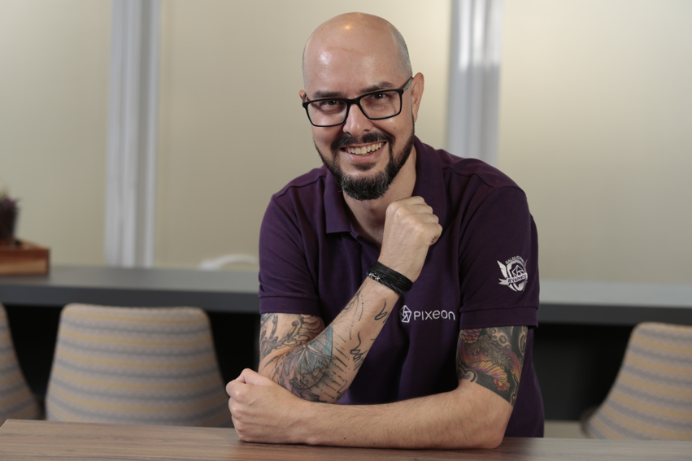

Casado duplamente com a Julhiana Pinheiro e pai de 04 pessoas incríveis: Eduarda, Gustavo e os gêmeos do 2º tempo de casamento, Joaquim e Benicio.
Também professor de violão nas horas vagas e baterista frustrado. Curiosidades: Já fiz abertura de show para Barão Vermelho quando mais jovem e estou aprendendo LIBRAS
(língua Brasileira de sinais) com minha filha Eduarda, que é entusiasta no assunto. Já morei no México, pela Edered Ticket Car, em Florianópolis, e atualmente em São Caetano do Sul/SP.
Resumo Profissional
Executivo de Produto com sólida experiência em estratégia e gestão de produtos tecnológicos voltados ao mercado corporativo. Com atuação “customer centric”, perfil orientado para resultados, gestão de times multidisciplinares com foco na redução de custos e aumento da eficiência, implementei análises e ações que impactaram o 'lost rate' e o valor percebido pelo cliente. Minha experiência inclui colaborações com stakeholders globais e negociações estratégicas em alianças OEM e parcerias. Além disso, sou ativo em mentoria para jovens profissionais de Produtos e Startups, incluindo atuação na ACATE (Associação Catarinense de Tecnologia), onde contribuo para o desenvolvimento e capacitação de novos talentos.
Habilidades e Competências
- Gestão Estratégica de Produtos: Planejamento e desenvolvimento de produtos alinhados com objetivos organizacionais e necessidades do mercado, com experiência em otimização de soluções escaláveis.
- Desenvolvimento e análise de P&L do portfólio: Em apoio e colaboração com equipes de finanças e tecnologia, com foco na compreensão dos resultados por oferta, classificação no ciclo de vida e desenvolvimento de ações-chave, sempre com foco no Cliente, na redução de custos e aumento de rentabilidade.
- Mentoria para Jovens Profissionais e Startups: Atuação como mentor na ACATE e em outros programas, contribuindo com insights e desenvolvimento de habilidades para jovens talentos no mercado de Produtos e Startups.
- Alianças e Parcerias Estratégicas (OEM): Capacidade de identificar e negociar com parceiros de white-label, com ênfase em manter estruturas de revenue sharing competitivas e vantajosas para a empresa.
- Apoio Multidisciplinar a Equipes de Vendas e Suporte: Experiência na interface com equipes de Pré-vendas, Professional Services, Customer Success e Suporte Técnico para garantir a entrega de valor e suporte completo ao cliente.
- Gestão de Programas de Reconhecimento e Motivação de Equipes: Implementação de práticas trimestrais para reconhecimento de desempenho alinhadas aos objetivos empresariais, promovendo motivação e alinhamento com metas estratégicas. Prática de 1 to 1 semanal com cada liderado direto, buscando alinhamento constante entre o esperado e o desenvolvimento individual, incluindo carreira.
Principais Realizações Recentes
- Redução de Lost Rate em 10% para Thomson Reuters e Pixeon: Em iniciativas conjuntas, conduzi análises detalhadas e ações focadas na proposição de valor e ajustes nas soluções, gerando uma redução de 10% no 'lost rate'. O foco esteve em desenvolver estratégias que aumentassem o valor percebido pelos clientes, fortalecendo a retenção e melhorando a experiência do cliente.
- Transição de Clientes para Soluções em Nuvem no DFe SaaS: Liderei a migração de clientes de soluções locais para a versão em nuvem de Documentos Fiscais Eletrônicos, em uma operação estratégica para o core business de emissão fiscal. Esse movimento aumentou a eficiência operacional e facilitou a escalabilidade da solução para atender a grandes volumes, além de alinhar o produto com tendências de mercado.
- Experiência em HealthTech e Combustíveis: Na HealthTech, trabalhei por quase três anos com EMRP, onde desenvolvi habilidades analíticas voltadas para o setor de saúde. Na área de combustíveis, minha experiência com Ticket Log e Ticket Car envolveu o controle e a análise de dados operacionais e financeiros, criando uma base sólida em eficiência operacional e gestão de ativos.
Professional Summary
Product Executive with solid experience in strategy and management of technology products for the corporate market. With a customer-centric approach, results-oriented profile, and multidisciplinary team management focused on cost reduction and efficiency, I implemented analyses and actions that impacted the 'lost rate' and the value perceived by the customer. My experience includes collaborations with global stakeholders and strategic negotiations in OEM alliances and partnerships. Additionally, I am active in mentoring young Product and Startup professionals, including working with ACATE (Associação Catarinense de Tecnologia), where I contribute to the development and training of new talents.
Skills and Competencies
- Strategic Product Management: Planning and development of products aligned with organizational objectives and market needs, with experience in scalable solutions optimization.
- Portfolio P&L Development and Analysis: Support and collaboration with finance and technology teams, focusing on understanding results by offer, lifecycle classification, and development of key actions, always with a customer focus, cost reduction, and profitability increase.
- Mentorship for Young Professionals and Startups: Mentoring role at ACATE and other programs, contributing insights and skill development for young talents in the Product and Startup market.
- Strategic Alliances and Partnerships (OEM): Ability to identify and negotiate with white-label partners, with an emphasis on maintaining competitive and advantageous revenue-sharing structures for the company.
- Multidisciplinary Support for Sales and Support Teams: Experience interfacing with Pre-sales, Professional Services, Customer Success, and Technical Support teams to ensure value delivery and complete customer support.
- Team Recognition and Motivation Programs Management: Implementation of quarterly performance recognition practices aligned with business goals, promoting motivation and alignment with strategic objectives. Weekly 1-to-1 practice with each direct report, seeking constant alignment between expected outcomes and individual career development.
Key Recent Achievements
- 10% Lost Rate Reduction for Thomson Reuters and Pixeon: In joint initiatives, I conducted detailed analyses and actions focused on value proposition and solution adjustments, resulting in a 10% reduction in 'lost rate'. The focus was on developing strategies that increased perceived value for customers, strengthening retention and enhancing the customer experience.
- Migration of Clients to Cloud Solutions in DFe SaaS: I led the migration of clients from local solutions to the cloud version of Electronic Fiscal Documents, in a strategic operation for the core business of fiscal issuance. This move increased operational efficiency and facilitated solution scalability to handle large volumes, aligning the product with market trends.
- Experience in HealthTech and Fuel Management: In HealthTech, I worked for almost three years with EMRP, where I developed analytical skills focused on the healthcare sector. In the fuel management area, my experience with Ticket Log and Ticket Car involved operational and financial data control and analysis, building a solid foundation in operational efficiency and asset management.
Resumen Profesional
Ejecutivo de Producto con sólida experiencia en estrategia y gestión de productos tecnológicos orientados al mercado corporativo. Con un enfoque centrado en el cliente, perfil orientado a resultados y gestión de equipos multidisciplinarios enfocados en la reducción de costos y el aumento de la eficiencia, implementé análisis y acciones que impactaron en la tasa de pérdida y en el valor percibido por el cliente. Mi experiencia incluye colaboraciones con stakeholders globales y negociaciones estratégicas en alianzas y asociaciones OEM. Además, participo activamente en la mentoría de jóvenes profesionales de Productos y Startups, incluyendo mi actuación en ACATE (Associação Catarinense de Tecnologia), donde contribuyo al desarrollo y capacitación de nuevos talentos.
Habilidades y Competencias
- Gestión Estratégica de Productos: Planificación y desarrollo de productos alineados con los objetivos organizacionales y las necesidades del mercado, con experiencia en la optimización de soluciones escalables.
- Desarrollo y análisis de P&L del portafolio: Apoyo y colaboración con equipos de finanzas y tecnología, enfocado en comprender los resultados por oferta, clasificación en el ciclo de vida y desarrollo de acciones clave, siempre enfocado en el Cliente, reducción de costos y aumento de rentabilidad.
- Mentoría para Jóvenes Profesionales y Startups: Actuación como mentor en ACATE y otros programas, contribuyendo con insights y desarrollo de habilidades para jóvenes talentos en el mercado de Productos y Startups.
- Alianzas y Asociaciones Estratégicas (OEM): Capacidad para identificar y negociar con socios de white-label, con énfasis en mantener estructuras de revenue sharing competitivas y ventajosas para la empresa.
- Apoyo Multidisciplinario a Equipos de Ventas y Soporte: Experiencia en la interfaz con equipos de Pre-ventas, Servicios Profesionales, Éxito del Cliente y Soporte Técnico para garantizar la entrega de valor y soporte completo al cliente.
- Gestión de Programas de Reconocimiento y Motivación de Equipos: Implementación de prácticas trimestrales para el reconocimiento de desempeño alineadas con los objetivos empresariales, promoviendo la motivación y alineación con metas estratégicas. Práctica semanal de 1 a 1 con cada subordinado directo, buscando alineación constante entre lo esperado y el desarrollo individual, incluyendo la carrera.
Principales Logros Recientes
- Reducción del 10% en la tasa de pérdida para Thomson Reuters y Pixeon: En iniciativas conjuntas, realicé análisis detallados y acciones enfocadas en la propuesta de valor y ajustes en las soluciones, generando una reducción del 10% en la tasa de pérdida. El enfoque estuvo en desarrollar estrategias que aumentaran el valor percibido por los clientes, fortaleciendo la retención y mejorando la experiencia del cliente.
- Transición de Clientes a Soluciones en la Nube en DFe SaaS: Lideré la migración de clientes de soluciones locales a la versión en la nube de Documentos Fiscales Electrónicos, en una operación estratégica para el core business de emisión fiscal. Este movimiento aumentó la eficiencia operativa y facilitó la escalabilidad de la solución para manejar grandes volúmenes, además de alinear el producto con las tendencias del mercado.
- Experiencia en HealthTech y Gestión de Combustibles: En HealthTech, trabajé casi tres años con EMRP, donde desarrollé habilidades analíticas enfocadas en el sector de salud. En el área de gestión de combustibles, mi experiencia con Ticket Log y Ticket Car involucró el control y análisis de datos operativos y financieros, creando una base sólida en eficiencia operativa y gestión de activos.